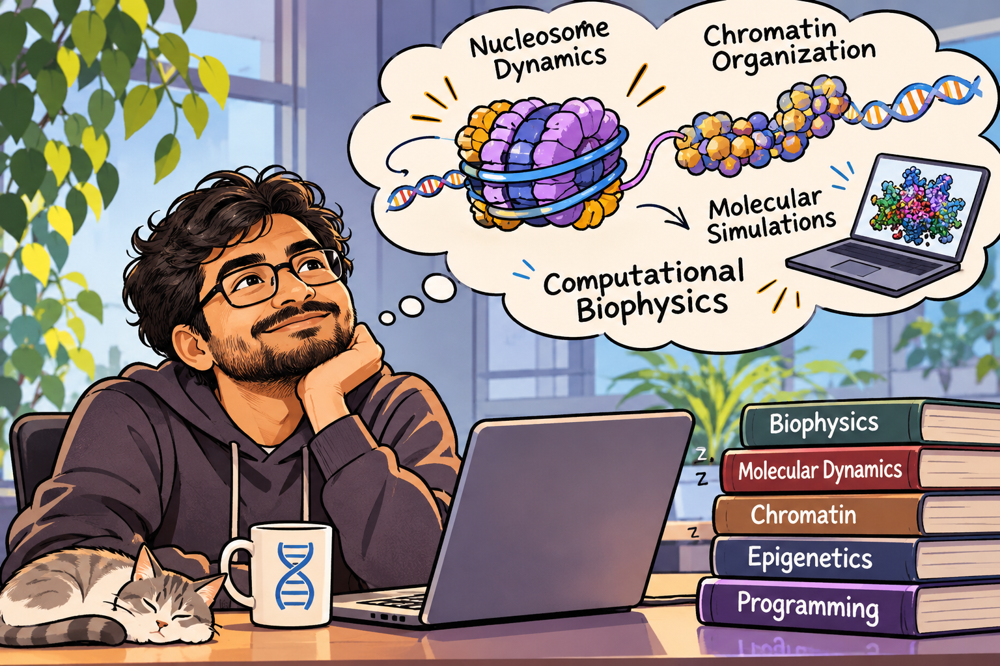

Computational Biophysics · Molecular Simulations
Dr. Abhik Ghosh Moulick
Postdoctoral Research Associate
Institute of Nanotechnology (INT)
Karlsruhe Institute of Technology (KIT), Germany
Email: abhik.moulick@kit.edu

Introduction
Welcome
I am a computational biophysicist interested in understanding how molecular interactions govern the structure, dynamics, and organization of biomolecular systems. My research combines all-atom and coarse-grained molecular dynamics simulations, enhanced-sampling techniques, and statistical-mechanical approaches to investigate processes across different spatial and temporal scales.
My current research focuses on nucleosome and chromatin dynamics, particularly how histone variants, DNA sequence, and protein interactions modulate nucleosome stability and DNA accessibility. More broadly, I am interested in developing multiscale computational approaches that connect molecular-level interactions with chromatin organization and genome dynamics.
Read more about my researchUpdates
In the News
- Our published paper in Nanoscale has been selected for the 2026 Nanoscale HOT Articles Collection by the Royal Society of Chemistry. Read paper ↗
- Publication alert: “Simulation of Protein Structure using a Coarse-Grained Potential incorporating the Backbone Dihedral Interactions” (accepted in Physical Chemistry Chemical Physics).
- Delivered an oral presentation titled “Toward Multiscale Modeling of Centromeric Chromatin: Protein Interactions, DNA Sequence, and Nucleosome Dynamics” at the CECAM meeting “Multi-scale and Multi-purpose Simulations of DNA: The Importance of Data” in Lausanne, Switzerland.
- New bioRxiv preprint: “DNA Sequence and Histone Variant H2A.Z Jointly Govern Nucleosome Unwrapping Pathways.” Read preprint ↗
- Publication alert: “Structural dynamics in the CENP-A nucleosome impacted by protein-protein interactions with centromere protein N” (published in Nanoscale). Read paper ↗
Location
My Present Coordinate
Karlsruhe Institute of Technology (KIT)
Karlsruhe, Germany